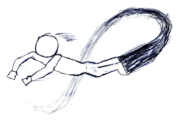

≡
E
M
C

×
E
SSAYS
M
USIC
C
ODE
CODE
Personal Projects
This website
A Unity game that I and 3 others made for a video game hackathon
School Projects
A random maze generator implemented in Haskell
An easy assignment for a social science course
A Unix-inspired shell
An assortment of assignments for an AI class
A raytracer
Tetris
A (very) basic 3D particle simulator I wrote for my high school AP class